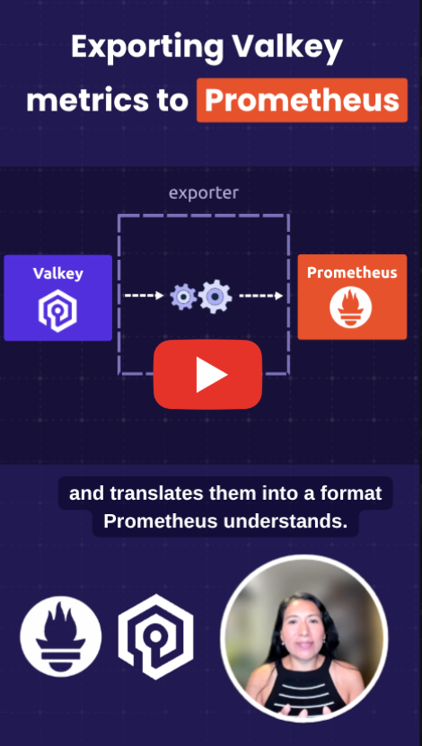

Valkey Metrics in Prometheus: redis_exporter and BetterDB
Everything you need to monitor Valkey is already in the Prometheus ecosystem. This post is about how kube-prometheus, redis_exporter, and BetterDB Monitor come together to give you a complete picture of a running Valkey cluster, one tool per observability dimension.
Here's the one-minute version.

A Valkey cluster has two distinct observability dimensions: what's happening inside each individual pod, and what's happening across the cluster as a whole. That's where running two complementary exporters side by side makes sense.

Two Exporters and One Prometheus
redis_exporter is the established Prometheus exporter for Valkey and Redis. In Kubernetes, the Valkey Operator runs it as a sidecar in every Valkey pod, so you get per-pod metrics on port 9121 at the standard /metrics path: memory, connected clients, command throughput, uptime. Because it runs alongside each instance, you can see exactly which shard is under pressure. Prometheus discovers it via a PodMonitor, not a ServiceMonitor, since the sidecar has no Kubernetes Service of its own.
BetterDB takes a different approach. It connects to the Valkey headless service, auto-detects cluster mode, and discovers the cluster topology automatically, exposing a single metrics endpoint at /api/prometheus/metrics with cluster-level and per-slot statistics.
Together, they give you both dimensions, pod-level detail from redis_exporter, cluster-level operational insight from BetterDB, flowing into a single Prometheus instance.
What You Can Query
Once both exporters are running, you query them side by side in Prometheus using PromQL.
From redis_exporter, one series per pod:
redis_memory_used_bytesredis_connected_clientsredis_commands_processed_total
One flag is worth knowing about: --append-instance-role-label adds an instance_role label of master or replica, making it easy to separate primaries from replicas in a query or alert.
From BetterDB, cluster-wide and per-slot:
betterdb_commandlog_large_requestbetterdb_commandlog_large_replybetterdb_slowlog_pattern_countbetterdb_acl_deniedbetterdb_cluster_slot_keysbetterdb_cluster_slot_reads_totalbetterdb_cluster_slot_writes_total, andper-slotstatistics fromCLUSTER SLOT-STATSthat redis_exporter has no equivalent for. Finding your hottest slot is one query: topk(10, rate(betterdb_cluster_slot_writes_total[5m]))
The commandlog metrics require Valkey 8.1+ (they have no Redis equivalent), slot statistics require Valkey 8.0+ with cluster-slot-stats-enabled, and betterdb_acl_denied requires ACL LOG (available since version 6).
Licensing
Prometheus, kube-prometheus-stack, redis_exporter, and the Valkey operator are all open source. BetterDB Monitor is open core: the Prometheus endpoint used here is MIT-licensed and free to use, while additional features require a commercial agreement for production use.
What's next?
Valkey is growing fast and the open source ecosystem around it is already there.
Try either exporter against your own cluster and share your experience in the Valkey Slack. For the full configuration and a closer look at each exporter, see Monitoring Valkey with Prometheus.